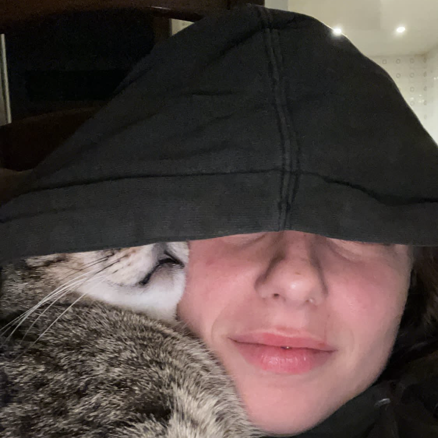

>>> code
>>> pseudo-code
>>> code
>>> pseudo-code
lineaumida
[python, a/v installation]
Lineaumida is the self-titled debut project of the collective of which I am part together with Nicolò Baldi, called Linea Umida.
This project is an evolution of my previous project slime machine.
Lineaumida is an audio-visual installation that explores intelligence and the relationship with machines from a non-anthropocentric perspective, challenging the dominant cerebrocentric view. It adapts all the principles of the research slime machine to an immersive audiovisual experience that combines visual and sound elements, making the core of slime machine accessible in a direct and engaging way. The visual part of the work is generated by the output of the aaardm.py algorithm, which, in 18000 epochs, i.e., 18000 complete cycles of computation on an iterous dataset, searches for the optimal solution. It works on images of size 100x100 pixels and therefore to create the final visual work, we divided the final format of 2240x1084px into modules of 100x100px. The input of the algorithm is an image we created composed of different organic figures that recall those of the slime mould. The output is given by the set of the graphic representation of the epochs. The final image represents the edges of the input image obtained by the algorithm. Through this installation, a new way of doing technology is proposed that celebrates nature as a source of inspiration. The integration of audiovisual elements aims to communicate the concepts of decentralization and randomness in an intuitive way, demonstrating how technologies can evolve not only through efficiency. The soundtrack is inspired by the seemingly incomprehensible behavior of physarum itself: a movement of chaos and order that finally manifests itself as deeply organic. Much like the calculation of the algorithm itself, the sounds do not follow a linear metric but rather emerge imperfectly and pulsatingly, alive. Within the composition they seem to struggle to emerge, to breathe. The random repetition of melodic parameters was made possible by the use of the instrument that most embodies the concept of a vibrant, independent self: the synthesizer. Composed in fact with analog and digital synthesizers, the track follows a process of sound sculpting that resembles the processing of the algorithm itself: a constant operation of selection and evolution that ultimately defines a single form.
Exhibitions & Awards:
Lineaumida received an Honorable Mention in the first edition of the Biosfera Prize, organized by Pesaro 2024 – Italian Capital of Culture, in collaboration with Fondazione Pescheria, Ctesquare, Artifact Studio, and Umanesimo Artificiale.
Lineaumida was exibithed in the Biosfera, Pesaro, February 2025
Lineaumida received a Special Mention for the Quality of Your Research by CREA Cantieri del Contemporaneo Venice, February2025
Lineaumida was exibithed in CREA Cantieri del Contemporaneo Venice, Venezia, April 2025